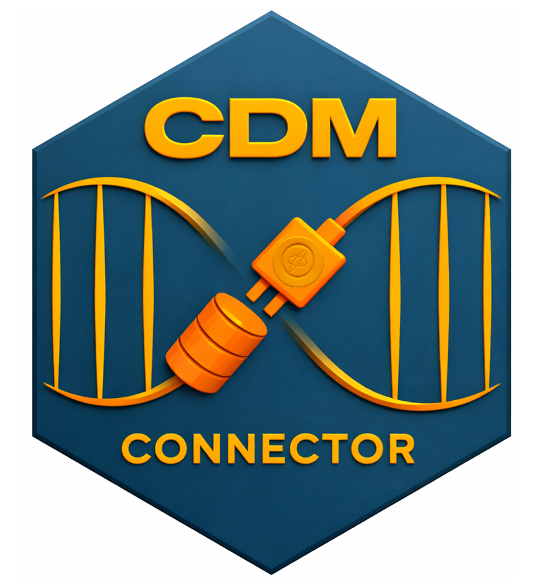

Changelog
Source:NEWS.md
CDMConnector 2.1.1
- fix bug with cohort generation @catalamarti
- fix bug in summariseQuantile2 @ablack3
CDMConnector 2.1.0
CRAN release: 2025-06-25
- Add support for Redshift and Spark with DatabaseConnector driver (pending version 7) @IoannaNika
- Update readme instructions to use camel case functions @ginberg
- New
summariseQuantile2function that supports multiple variables @ablack3 - Fixed the returned table references @mvankessel-EMC
- Validate the writePrefix @xihang-chen
CDMConnector 2.0.0
CRAN release: 2025-02-21
- Remove snake case functions in favor of only camel case style
- Remove cohort table manipulation functions
- Add row to cohort attrition table that accounts for record collapsing cohort eras step in Atlas/Circe cohort generation
- Increase test coverage
- Fix bugs with
cdmFlatten - Add support for snowflake with DatabaseConnector driver
- Add attrition record for cohort era collapse when generating Atlas cohorts
CDMConnector 1.7.0
CRAN release: 2024-12-19
- Add support for Big Query using bigrquery DBI package (pending PRs on omopgenerics and bigrquery) @IoannaNika
- Add support for the DatabaseConnector postgresql JDBC driver @ablack3
- By default automatically detect CDM version @catalamarti
- Deprecate snake case functions @IoannaNika
- Deprecate cohort manipulation functions @ablack3
- Deprecate validation functions @ablack3
CDMConnector 1.6.0
CRAN release: 2024-11-13
- fix bug in copyCdmTo where attribute tables were not being copied #231 @catalamarti
- check that overwrite argument works in compute when using temp tables #222 @ablack3
- added synpuf1k with Achilles tables to example datasets #230 @ablack3
- add requireEunomia function #481 @catalamarti
CDMConnector 1.5.0
CRAN release: 2024-07-16
- Get all tests passing on Databricks/Spark using odbc driver
- Emulate temporary tables on Databricks/Spark when compute is called with temporary = TRUE
- soft deprecate asDate in favor of as.Date
- soft deprecate assertWriteSchema since cdm object are now required to always have a write schema
- remove support for Capr cohort objects in generate_cohort_set to pass CRAN checks
CDMConnector 1.1.0
CRAN release: 2023-08-17
- add
copy_cdm_to,copyCdmTo - add
generate_concept_cohort_set,generateConceptCohortSet - add more example CDM datasets
- add
record_cohort_attrition,recordCohortAttrition - improve database test coverage
- update vignettes
Released Aug 17, 2023
CDMConnector 1.0.0
CRAN release: 2023-06-12
- remove
write_prefixincdm_from_conin favor of using thewrite_schemaargument for prefixing - remove
cdm_tablesargument fromcdm_from_conin favor ofcdm_select_tblselection function - add attributes to the cdm object to communicate downstream temp table preferences
Released June 7, 2023
CDMConnector 0.6.0
CRAN release: 2023-05-05
- generate Capr cohorts with
generateCohortSet - add datepart function for extracting year, month, day parts of dates in dplyr
- fix datediff logic for years so it now returns number of complete years between two date
- add “write_prefix” attribute to cdm objects to support a namespace within the write_schema
Released May 5, 2023
CDMConnector 0.5.1
CRAN release: 2023-03-22
- Add both camelCase and snake_case versions of all functions (@Tsemharb)
- Add cdm object attributes to
cdm_snapshotoutput - use
number_recordsandnumber_subjectsin cohort counts table - Minor bug fixes
Released on March 20, 2023
CDMConnector 0.5.0
CRAN release: 2023-03-09
- Define
generatedCohortSetclass - Add
summarize_quantilefor cross database quantile queries - Add
GeneratedCohortSetobject, constructor, and attribute accessor functions - Add vignette on cohort generation
- Add
cdmSubset,cdmSubsetCohort,cdmSamplefor subsetting a cdm - Add
cdmFlattenfor transforming a cdm into a single flat table of observations - Improve test coverage
- Make Java dependency optional
-
cdm_schemais now required incdm_from_conexcept for duckdb connections - Remove visit_detail from default cdm tables
- Deprecate
computePermanent - Improve package website
Substantial contributions by @edward-burn, @catalamarti, @Tsemharb who are now package co-authors.
Released Mar 8, 2023
CDMConnector 0.4.1
CRAN release: 2023-01-24
- Add
computeQueryfunction for creating temp and persistent tables from dplyr queries - Download Eunomia from darwin-eu repository as zipped csv files
- Add passing tests for Oracle and Spark
- Add
asDatewrapper that provides correct as.Date dbplyr translations - Incorporate code review suggestions from @mvankessel-EMC
Released Jan 21, 2023
CDMConnector 0.3.0
CRAN release: 2022-11-29
- Add computePermanent and appendPermanent functions
- Add readCohortSet
- Add generateCohortSet
- Extract Eunomia dataset so that it is downloaded separately
Released Nov 29, 2022